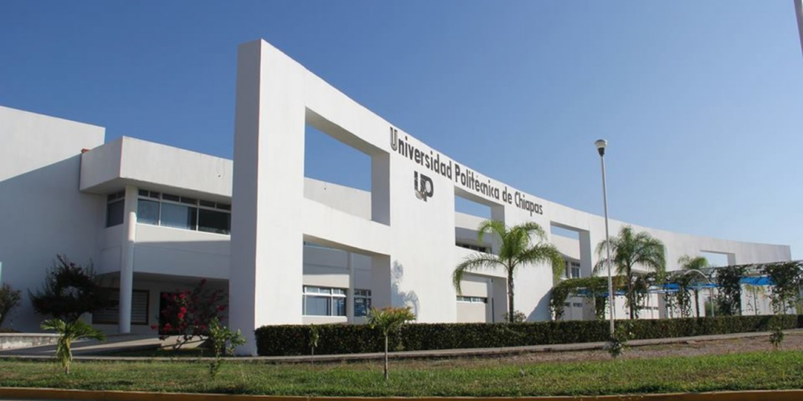
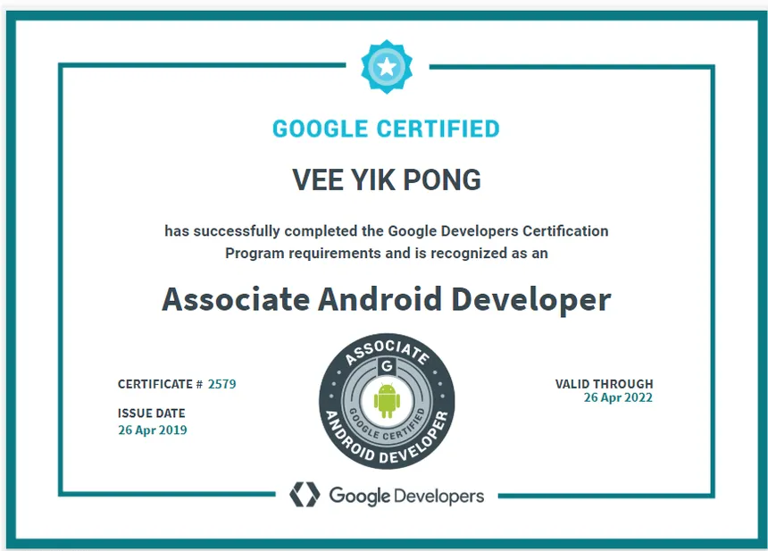
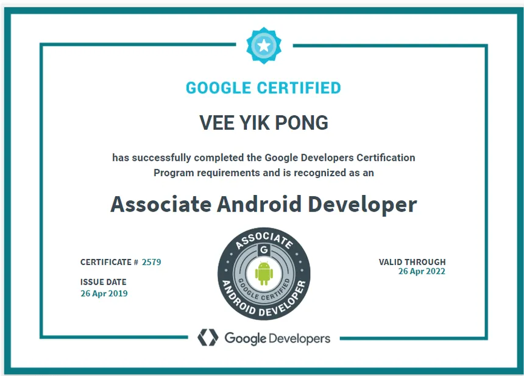

Molina Mendoza Carlos Fabricio
Ingeniero en desarrollo de software
Soy Carlos Fabricio Molina Mendoza, ingeniero en desarrollo de software, me dedico a la
programación. En este blog personal, hablaré sobre mi formación académica, mis
certificados, mis proyectos personales, en qué otros proyectos participé, y el cómo
incursioné en el mundo de la programación.
.jpeg)
Formacion académica
Acerca de mi formación académica, cuento con dos títulos, me encuentro titulado
como Técnico en Soporte y Mantenimiento en Equipo de Cómputo, por haber estudiado
en el CBTis 144, y por otro lado, me encuentro titulado como Ingeniero en desarrollo
de Software, como egresado de la Universidad Politécnica de Chiapas.

Mi vida en la programación
No empecé a programar hasta los 17 (Casi 18 años), en ese entonces, había ingresado
a la carrera de Ingeniería en desarrollo de software en la Universidad Politécnica de
Chiapas. Antes de llegar a la universidad, no tenía idea de qué carrera estudiar,
estaba entre la espada y la pared, en ese entonces tenía que escoger una opción,
tenía unas cuantas opciones, pero la que me pareció más atractiva, fue la carrera
de desarrollo de Software, por lo que, decidí dar el salto de fé y cursarla, sin
pensar que terminaría encontrando mi vocación.
Mi primer vistazo al mundo de la programación fué en el curso de inducción de la
carrera, donde aprendí por primera vez a usar HTML y CSS, y aunque estos, no sean
precisamente lenguajes de programación, con ellos le pude dar un pequeño vistazo
de lo que iba mi carrera. Pero mi verdadero contacto con la programación fué con
c++, en la clase de Algoritmos, y fue cuando me dí cuenta de cuánto me apasionaba
la programación, pero no hubiera podido aprender a programar de no ser por mis
profesores.

 
